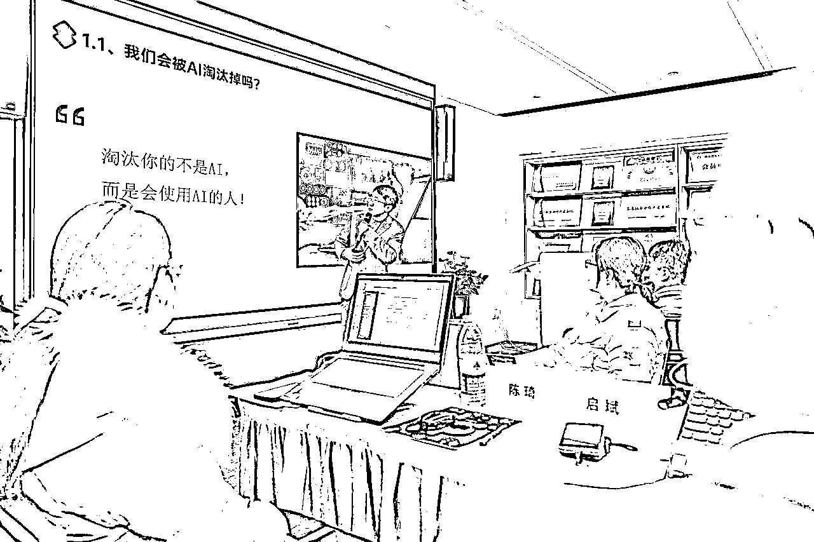
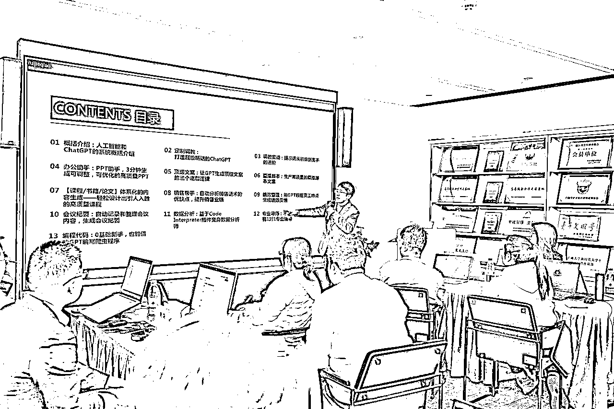
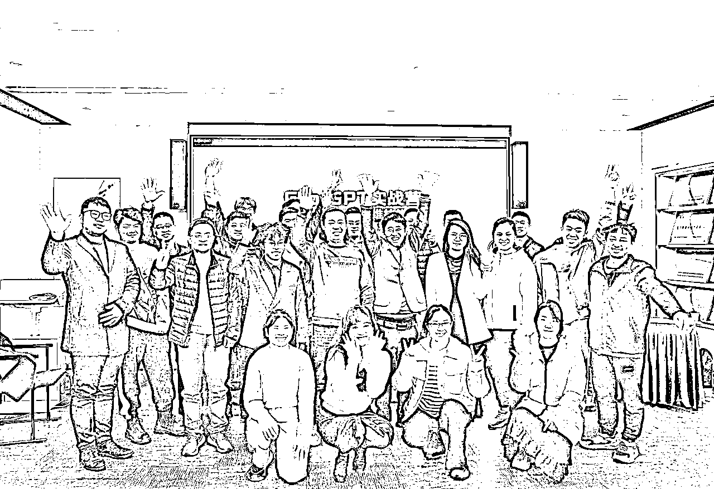
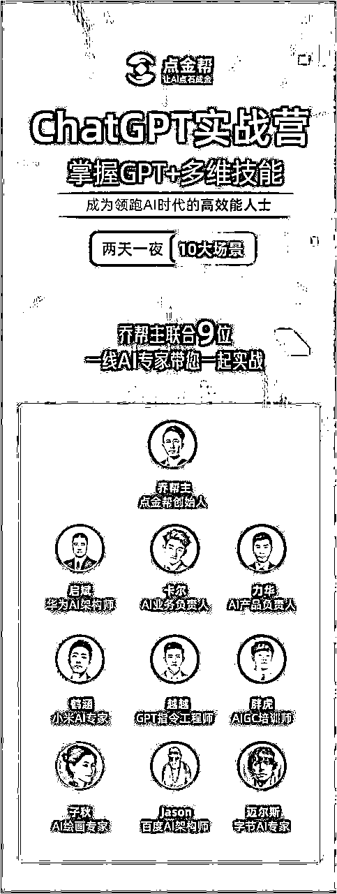
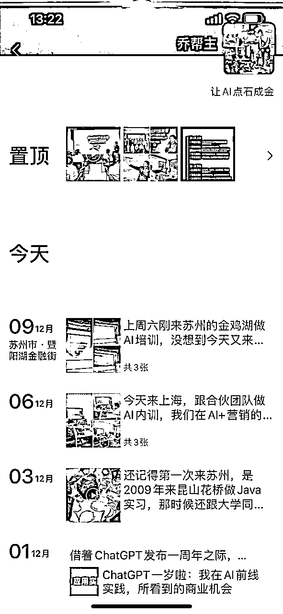
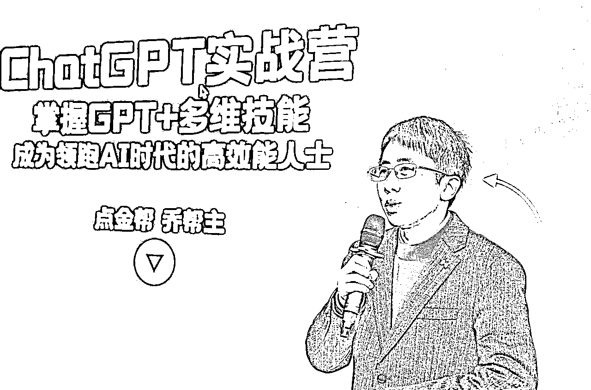
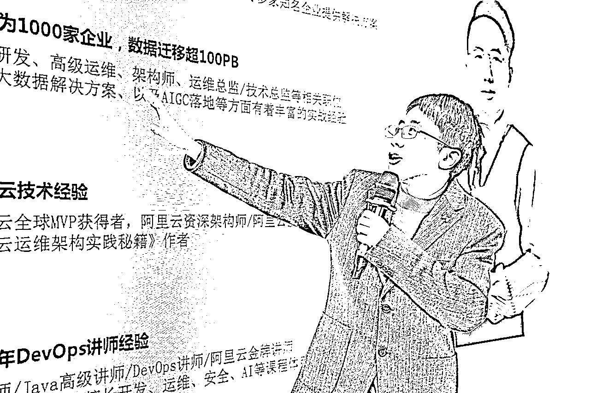

来源：https://w91h2gmtrn.feishu.cn/docx/LpZidqiwvodqYOxeA2pc3rPxnhe
读前说明：
1、本文5200实战干货，实践干货内容较长，图片截图也较多，建议用电脑浏览器阅读更加高效。
2、欢迎圈友来链接和交流（微信：qiaobangzhu-cn），一起AI、一起成长、一起赚钱！
3、乔帮主的AI实战训练营正在火爆招募中，全新的七大阶段的AI课程体系，手把手带大家玩转AI：
文章目录：
1、为什么哪怕赔钱也要做线下课？
目的1：品牌势能背书
目的2：市场反馈获取
目的3：客户升单 + 促进合作与联盟
2、线下课的三大难点？
难点1：课程的开发与授课交付
难点2：学员的招募
难点3：场地安排
3、做线下课的四个步骤？
步骤1：先海报招募，后做课
步骤2：复制模仿，是做课的重点
步骤3：现场布置及物料准备
步骤4：课程授课交付
4、后续改进与优化
改进1：升单
改进2：课程体系
改进3：线上课
改进4：内容切片
大家好，我是乔帮主。在11月25日~11月26日，举办了一期两天一夜的线下ChatGPT实战营，1980元招募了30人，营收五六万。


线下课程的交付质量和体验都让用户口碑爆表，原本两天一夜的实战课，硬是被学员积极的热情搞成两天两夜了。现在已经在筹办第二期了，在这里也是抽空跟大家全流程复盘分享下这次线下实战课，相应干货内容希望对大家能有所借鉴和帮助。

做线下课，特别是在前期势能不够，多半会导致学员招募不理想。最后做成本核算，除去一些硬性成本开销，一次线下课对很多人来说多半是赔钱的。
而且做一次线下课，真的太费劲了，从宣传招募、到课程准备、到场地线下布置、以及授课交付。弄完一场，精疲力尽。
但是我们哪怕是赔钱，也要去做线下课，那这目的是为了什么呢？
线下课的宣传海报、然后现场的照片、宣传视频这些、客户的反馈评价等都是非常重要+非常重要的宣传素材，毫不夸张的说，我举办一次线下课，最为核心的目的就是为了累积这些宣传素材。


然后把这些素材最终发到私域朋友圈、公众号、视频号等，这对我们做品牌、做IP，都是积累了非常好的信任背书和势能。后续你的客户来找你的时候，看到这些宣传背书，对你的成交是非常重要的信任基础。因为这就是你的门面，也是你品牌实力的证明。
都说知识付费是割韭菜，核心原因是因为一般知识付费的交付都是通过线上录播课完成。而线上录播课有个重要的痛点问题就是，很多录播课的课程录制质量又很差，加上学员在学习的过程中遇到的问题并不能有效解决，学习的质量和体验都没办法得到保障，这是被骂割韭菜的重要原因。
而我们线下课就不一样了，面对面的学习交流，遇到问题手把手的指导，这种高质量的服务交付标准+现场学习氛围感，很容易让参与者增强对品牌的忠诚度。而忠实客户不仅会重复购买，还会通过口碑宣传来吸引新客户，这无疑也是对品牌势能积累是非常重要的。
再者课程内容通过线下交付，能进一步真实知道客户真正的需求和痛点，能让我们进一步去完善我们的课程内容体系，进一步打磨我们高质量的产品。
有些时候我们闭门造车、重复造轮子，很多时候就只是站在自己角度yy，而不了解市场真实需求、真实情况等。
之前在 中也提到过，线下课作为我们信任产品，目的主要是为了往高客单产品做升单。总体而言，我们的课程只是我们售前方案！
所以线下课交付的时候，在课程内容里面嵌入其他付费产品，是很容易进行升单二次转化的。当然如果你不想升单，想招募合伙人、招募代理等方面的合作，也是很容易从学员中转化。
正如前面所说，线下高质量的服务交付和体验，是很容易收获一批忠实用户，所以不管你是做二次升单转化，还是促进合作与联盟，都是非常容易的。就拿我们这次线下课，我这边就谈了8个点金帮联合创始人，加入我们深入合作的模式。
既然是线下课，课程的开发和交付将是重点。做一场两天一夜的线下课，PPT起码都得要100页以上了。首先对你课程内容体系有较高要求，内容要根据培训主题，由浅入深、再结合实践案例，这些都是不容易的。
没做过课程开发的，起码得3~6个月磨课，才能做到线下交付。虽然我对课程和培训都较熟悉，但这门课的开发，也花了我1~2个月。
除了课程内容开发外，再者就是现场授课交付了。先不说你课程内容有没有价值，学员在现场听课，直接互动的对象就是老师。怎么去调动学员的积极性、怎么在现场控场，这对老师的授课能力和演讲水平都有较高要求，弄不好，很容易翻车。
而且你在课程内容开发完之后，我们备课的过程，要结合PPT的内容，在里面大量做些场景案例、故事案例、互动案例来埋点，这样你在授课交付的时候，会让我们课程的交付变得非常饱满、学员体验会非常好，这些都是一个优秀老师的基本素质和核心能力。
学员的招募其实让我非常头疼的，刚开始招募的时候，势能不够，招募困难，都差点让我放弃这次线下课了。
虽然我今年在圈内写了也还蛮多内容，有一定影响力，私域有个一万多人。我们在10月份刚开始招募的时候，我一个合伙人当时信心很足，说起码不得招个50人-100人。
有时候，你的势能是要比想象中要弱的。盲目的自信，结果让我们吃了闭门羹。后来我们复盘分析了下原因，主要是以下三点原因：
1、IP势能还不够，对用户的影响力、和信任积攒不够。
2、虽然私域有一万多人，但大多人都是范粉，粉丝用户不够精准。
3、线下课，很多人由于地域原因参加不方便。加上1980的价格，也有点门槛。
所以为了解决以上三点问题，我们就马上调整了整体招募方案，首先，从10月份开始，我在生财有术、淘金之路等社群，组织了五六次ChatGPT线下实战组局，另外去也参加了七八次企业专场培训以及线下大会分享。
一方面是为了磨课试水，看看大家对内容的反馈。也正是前期这些磨课试水，后面线下课交付的时候，我都基本没怎么备课准备，就直接交付。另外一方面也是为了跟自己课程造势，积累影响力和信任背书。
其次，通过社群文章分享 + 朋友圈 + 公众号 + 视频号直播，然后结合微信私域1V1私信群发，让我们的课程内容去曝光，去轰炸用户。
最后，去找渠道合作，直接50%的返佣机制。然后招募的时候，结合一些折上折的优惠价继续推进报名成交。为了保障充足的宣传和招募时间，原本我们定在11月4日~11月5日的课程，也延期到11月25日~11月26日。
经过以上几个策略，我们也是招募到30人。虽然人不算多，但我们做这事从0到1，对我们自身而言，算是圆满成功。
找到一个合适且性价比高的培训场地，是很不容易的，这方面也是花了我大量时间。说到培训、会议，大家首先想到的就是酒店的会议室。这里强烈建议不要选酒店的会议室，这是性价比最低的。低则四五千一天，稍微环境好点的，还要七八千、上万一天，贵的要死，浪费钱。
我这边之前去参加过刀姐线下三天的AIGC培训师，觉得那边的培训场地不错，能容纳100人，而且一天才1000，果断作为默认选项。
我又去小红书、抖音搜“培训会议室”，加了很多人了解了下培训会议室，基本上1000-2000/天，性价比也是蛮高。
后来我又问了下我这边公司租用办公室的对接人，让他那边帮忙推荐了附近的培训会议室。那边推荐了我办公室这边楼下银行里的一个培训室，环境很不错，关键还免费，也是帮忙节省了很大的成本。都说创业的三板斧是认知差、执行差、资源差，这也算是妥妥的资源差了。
另外很赞的是，会议室里的投影仪是个很大的高清液晶显示器，很适合拍照、拍视频宣传（选场地我很看重这一点，本来重点就是为了宣传）。我跟学员的合影，就直接用高清液晶显示器作为背景。以下图片的背景就是高清液晶显示器，拍出来背景效果就跟真实海报效果一样，这都省去了买实物的海报了。


我以前喜欢上来就先搞个产品什么的，花了大量时间去做产品开发、做课程开发，但开发出来了没人买，最终的结果就落个无人问津，这是兵家大忌！
线下课的重点是商业营销思维，而并非课程内容思维。我们应该是营销先行，课程什么的、产品什么的先滞后。我们上来把课程宣传先搞出来，先把用户的钱收了，我们再去做课。这样课程开发才有意义，才有抓手。这次我也是先去搞宣传海报，先做学员招募。然后直到开课前两周，我才把课程内容准备好的。
课程宣传海报中，我觉得最重要是向客户传达你的课程价值+营销痛点。海报中，最重要的是以下四点：
首先，是课程的主题+课程大纲内容，用户通过学习能获得什么，你这个课的价值就体现在大纲里了。所以在我们这边课程内容里，AI PPT、AI文案写作、0基础写爬虫代码，都是经典非常有价值的实战案例。
其次，老师是谁？是谁传授你知识。我这边也是专门邀请了业内好几个一线AI专家来做助教，保障交付质量。这个是个很重要的宣传噱头和营销背书。
然后，有什么附加价值？我们课程里面直接赠送ChatGPT 4.0的账号的、点金帮的AI知识星球+AI社群、ChatGPT精进手册、售后陪跑一个月、企业场景免费提效咨询1小时等高价值内容。
最后，就是关键的定价环境。定价太高，担心没人买。定价太低，搞的像献爱心一样了，担心入不敷出。我们也是想着先做起来，但定价也不能太低（会影响后面高客单价走势），所以我们最终决定两天一夜原价是3980，首期采用1980的五折价格。
先复制模仿，再创新超越，这是我们做产品内容的核心原则。千万别重复造轮子，觉得自己的产品内容很有竞争力，非要yy个东西出来。没有经过市场验证的东西，风险是极其高的。而经过市场验证的东西，就是同行竞标的产品内容。
所以我做课程也是很简单，把市面上做AI课程的所有课程内容都搜集过来，然后改改就成为自己的课程内容了。快速的去复制模仿在市场上先跑起来，后续逐步的去优化迭代。而不是自己闭门造车，最终大量时间都浪费在重复造轮子上了，最终出来的东西，又被市场狠狠的教育。
选好场地后，现场布置及物料准备也是很重要的。按照优先级有四点准备：
首先现场拍摄，要找个专业点的摄影，进行活动照片拍摄、和活动视频拍摄，一般一天是四五千左右费用。为了节省成本，可以选择拍摄一天、或者半天的。
其次现场最好跟每个学员准备教材、白纸、笔，这样方便学员做记录汇总，我们这边是直接将所有授课PPT都全部打印出来作为教材给到学员的，并且所有授课演示的案例和提示词，都是电子版直接给到学员，这块方便学员课前和课后深度学习的。这些看似很简单的小细节，但是对学员提升学习质量都是非常有必要的。
然后跟学员准备水、纸巾、零食/点心/水果等茶歇，这都是避免学员犯困的一些必要物料。
再者还需要跟每个学员准备铭牌，这是跟学员分组非常有必要的，也方便学员过来现场能自行找到自己的位置入座。
除了以上物料，像签到表、课表、横幅海报（直接用投影显示屏代替了，PPT高清效果跟海报效果一样）、毕业证书等一些非必要的物料，我全部砍掉了。尽量减少交付压力，尽量集中在内容质量交付，少些内容形式上的交付。
最后就到了课程交付，一般授课培训过程中，要安排很多提问、小游戏等一些互动环节，这些交付的形式我全部砍掉了。
主要这些花里胡哨的我要花时间准备，所以最后索性搞简单点，既然线下实战课，那就以现场讲解+实操演示，然后手把手带大家实战为主，把一些交付花里胡哨的环境尽量减少。
也是正因为我这边集中在AI实战交付，太多学员跟我反馈，说我课程内容实在太干货了，一点水分都没有，这也是学员对我们课程高评价的重要原因。
包括两天一夜中晚上的实战项目，也是用真实案例，结合白天学的AI技能，在真实的项目案例中去应用学到的AI技能，算是现学现用，温故知新。
除了授课流程外，最重要的就是授课老师。客户的满意度，80%直接来源于授课老师传授能力。这对授课老师的演讲能力和控场能力都要求极高，没做过几十场授课，是很难达到这要求的。
我们线下原本安排两个授课老师（包括我），后来为了考虑交付的统一和交付质量，我就一个人直接上了。两天的课程，强烈建议安排的老师不要超过两个。
我见过很多线下课，半天3小时课程，还用两个老师，仅半天还讲两个主题。老师不一样，交付标准、交付流程、交付风格都不一样，导致最终交付质量也不一样，很影响学员交付体验的。所以尽量控制老师数量，是控制交付质量最重要的方式。
另外还有个值得注意的就是课程交付时间安排，上午我们是08:30签到，09:00—12:00是上午课程（平均1个小时左右休息10分钟），下午是14:00—17:00。
晚上项目实战，看大家时间安排，我们老师和助教都是全程陪伴指导答疑。原本两天一夜的实战课，硬是被学员积极的热情搞成两天两夜了，氛围感超级浓厚，这也是线上课完全没有的体验和感受。
这次线下课，虽然转化了很多合伙人，一起深度合作项目的。但是整体产品体系里，没有把我们后端升单的高客单价产品推出。虽然我们后端有企业AI定制服务，但我们这次线下课的个人，偏向职场的个体较多，所以这块高客单价服务对他们来说也不适合。
我们内部的联合创始人，有跑通公众号爆文，成功实现月入30万+，这块打算做个高客单价的训练营，也打算直接放在第二期的升单产品中在线下进行升单转化。
除了这个升单产品外，我们还跑通AI+营销领域的业务，我们在前端接了很多业务（本地生活的、培训行业的、美业行业的、新能源汽车行业的等）。现在我们在后端也在搭建实施交付团队，实施内容包含：AI爆款短视频文案、AI矩阵系统批量起号+混剪实施部署、AI培训等等。这个AI项目，也打算放在我们升单项目中来招募。
技能课的价值是有限的，虽然我们首期课里面放了大量的实战案例，比如在GPT+PPT、GPT+文案写作、GPT+课程设计、GPT+编程等等，但整体来说都是偏向GPT技能的应用。技能的提升，价值有限，导致客单价也普遍提不起来。
所以在第二期线下课，我们打算课程内容围绕项目实战而展开，GPT技能内容也会讲，但我们侧重在拿到结果的实战项目中去讲GPT。会具体把我们升单中的两个项目：AI+公众号爆文、AI+营销结合到我们课程内容体系中。以项目为导向，这块价值维度会更高。
除了我们后端高客单升单产品缺少外，在前端引流型产品也是缺少的。上来就直接几千的信任型产品，还是有些费用门槛不好转化的。所以在前端放大量的9.9、99、199的低客单价录播课，也是方便我们往信任型产品成交，因而再往我们高客单利润型产品转化，这样流量才能形成闭环。
这次请了专业的摄影团队，除了拍照片、宣传视频外，还准备把课程内容全部拍摄下来做内容切片，到时候放在视频号、公域平台中传播引流。
但切片课程，在课程交付上要求更高更严苛，一方面，要在课程内容中加入大量的案例故事埋点来调动营销情绪，另外一方面对授课流畅性要求更高，所以这方面也要花大量时间来准备，这期就没来得及准备，打算放在下期来弄内容切片了。
乔帮主的AI实战训练营正在火爆招募中，全新的七大阶段的AI课程体系，手把手带大家玩转AI：
往期干货精选：
往期干货合集：
微信：qiaobangzhu-cn，欢迎交流！
公众号：乔帮主的AI江湖